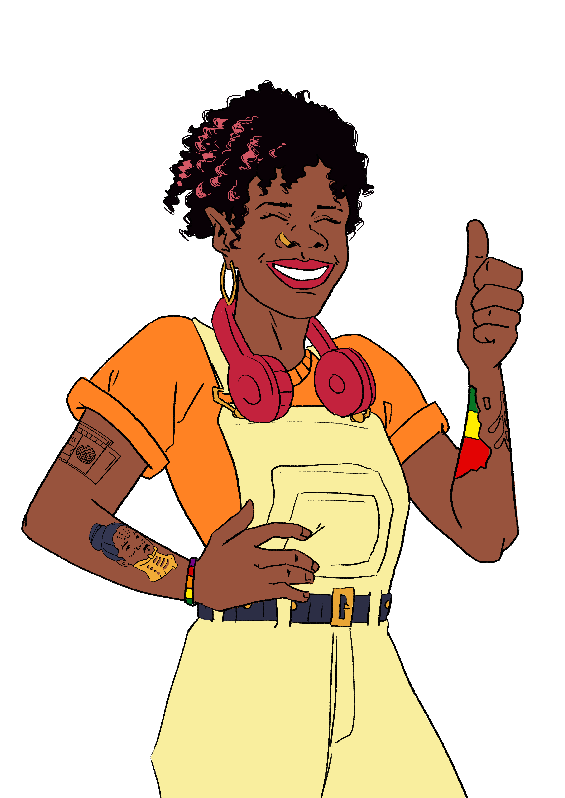
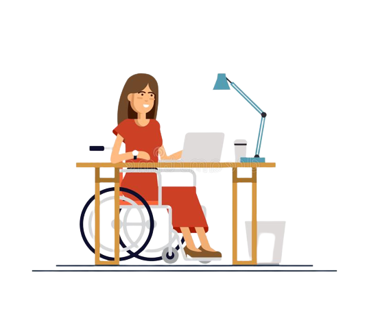
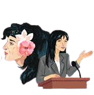

ODS 8 - Trabalho decente e crescimento econômico
Promover o crescimento econômico sustentado, inclusivo e sustentável, emprego pleno e produtivo e trabalho decente para todes!
O que é trabalho decente?
É o trabalho adequadamente remunerado, inclusivo, exercido em liberdade, equidade, segurança e capaz de garantir vida digna.
Qual a relação do trabalho decente com o crescimento econômico?
Quando o trabalho é digno, a quantidade e qualidade dos produtos e serviços crescem.
 

•